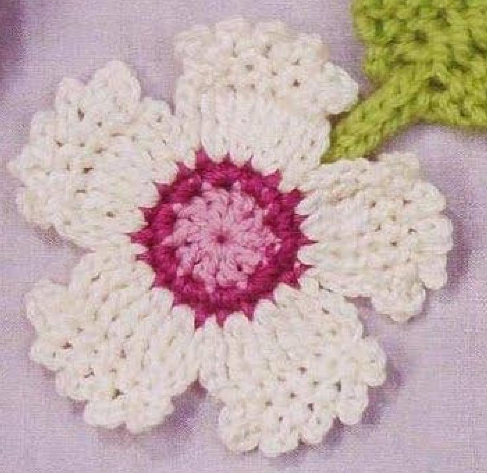
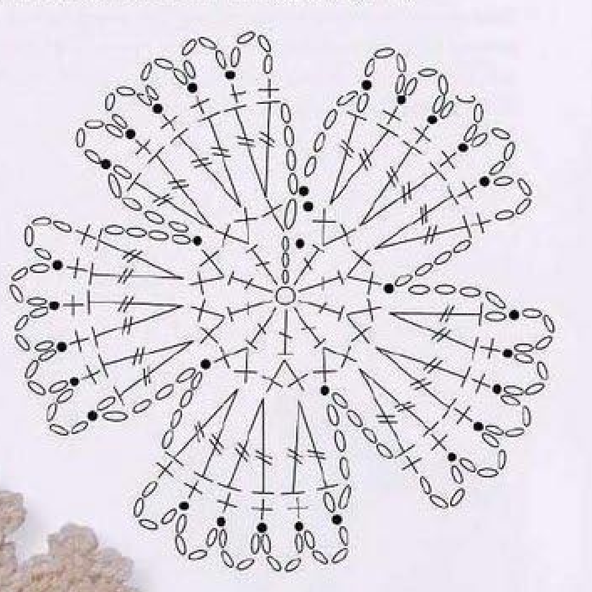
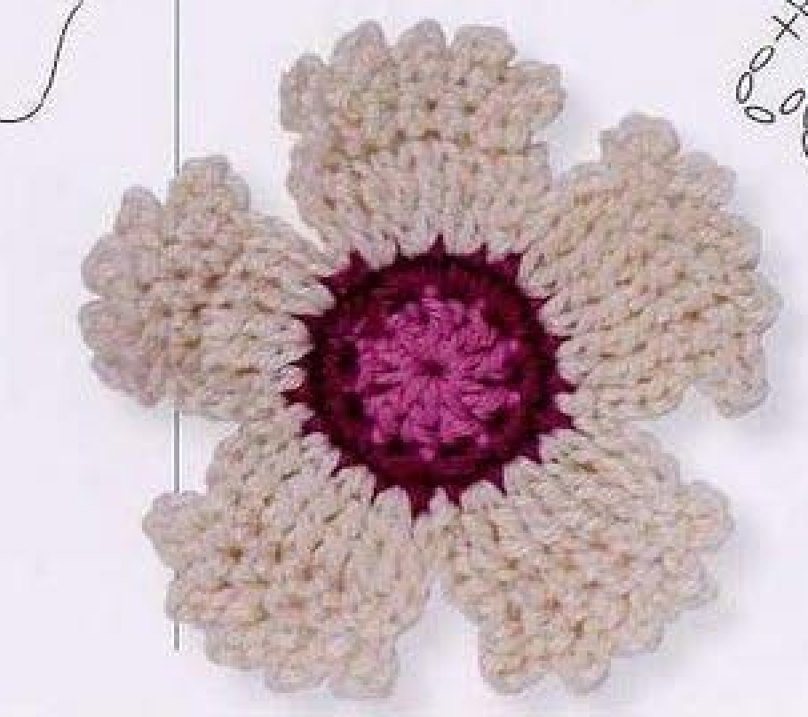
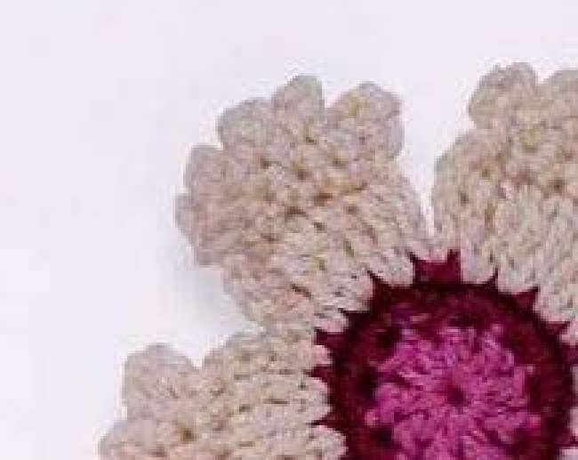

Crochet Old-fashioned Pink combines a small pink center, a magenta outer ring, and five broad white petals with chain-loop edges. Each petal is worked as a tall fan, followed by a short return row and a decorative loop row. This guide follows pattern 65 in Lesley Stanfield’s 100 Flowers to Knit & Crochet, preserving the continuous petal construction in US terminology and including the original chart and finished-work photographs.

Key Takeaways
- Use 4-ply cotton in pink A, magenta B, and white C.
- The center rounds have 10 and 20 counted positions.
- Make five petals, keeping C attached between them.
- Each first petal row has a four-chain rise and six US trebles.
- Five four-chain edge loops finish each petal before its connecting chain.
- The nearby green Small Leaf is separate from this flower recipe.
CROCHET OLD-FASHIONED PINK FLOWER PATTERN
Project: One five-petal cotton flower with a pink-and-magenta center and fringed white fan petals. The entry is grouped among intermediate designs. US terms are used; measurements and hook specifications are not supplied.
| Skill level | Intermediate in the source. Practical focus: tall fan stitches, short return rows, chain-loop edges, and connected petals. |
|---|---|
| Base size | One flower with 5 petals. Finished dimensions are not specified. |
| Yarn | 4-ply cotton: pink A, magenta B, white C. |
| Quantity, hook, gauge | Not specified. Choose a hook suited to your cotton and examine a complete center and petal. |
| Notions | Scissors and a blunt needle for securing ends. |
| US abbreviations | ch = chain; sc = single crochet; dc = double crochet; tr = treble crochet; sl st = slip stitch; RS = right side. UK dc = US sc; UK tr = US dc; UK dtr = US tr. |
| Center round 1, RS | With A, make an adjustable ring. Ch 3, 9 dc in the ring; pull the end to close. With B, sl st in the top chain of the starting ch 3. 10 counted positions. Continue B. |
| Center round 2 | Ch 1, sc in the stitch below, 2 sc in each of the next 9 dc. With C, sl st in the starting ch 1. 20 counted positions. Continue C. |
| First petal row 1, RS | Ch 4, 2 tr in each of the next 3 sc. Turn. |
| Petal row 2 | Ch 1, sc in each of the next 5 tr. |
| Petal row 3 | [Ch 4, sl st in the next sc] 4 times; ch 4, sl st in the preceding row’s ch 1. Do not turn. Ch 4, sl st in the next sc of center round 2. |
| Remaining petals | Without fastening off, work 4 more petals in the same way. End with a sl st in the first chain of the first petal. Fasten off invisibly. |
| Finished construction | 5 connected white petals around the 20-position center. No stem, leaf, sewn stamens, or additional flower layers are specified. |
Understand the Fan Petals and Their Edges
Old-fashioned Pink uses five broad fans arranged in one layer around the center. The fans are made from tall US trebles that share three consecutive center bases. A smaller row of singles crosses their tops, and chain loops decorate that row to produce the soft fringed outline.
The white yarn remains attached as you move from one petal to the next. A four-chain connection returns from the petal edge to the next center single. This differs from flowers whose petals are made separately and sewn on later, or individually fastened off after every fan.
The center’s twenty counted positions support five repeated four-position sections: one rise or connection position and three following bases containing paired trebles. Keep the center stitch route visible while the white edges grow, so each new fan starts at the correct place around the ring.
Choose Cotton and Prepare a Sample
The source specifies 4-ply cotton in pink A, magenta B, and white C. Pink provides the inner disc, magenta forms its narrow outer ring, and white creates all five petals and their decorative edges. Keep those roles clear when joining new colors at the center-round closing stitches.
No hook size, numerical gauge, overall quantity, or finished diameter is given. Select a hook appropriate to your own cotton and assess the center with one complete petal. Fine cotton should show the paired tall stitches and little edge loops clearly, while remaining flexible enough to lie as a floral applique.
If you plan to attach the flower to a measured space, finish a sample before deciding how many motifs to make. Different cotton brands, hook sizes, and personal tension can change the final width. A yarn label’s gauge for a larger fabric does not supply a finished measurement for this small flower.
Keep scissors and a blunt needle nearby for the final invisible finish and end securing. The pattern does not name an extra backing, sewn bead, button, stem, or leaf. These can be separate creative choices later, but they are not required materials for the source flower.
US Terminology and Tall-Stitch Preparation
The original uses UK terms. UK double crochet translates to US single, UK treble to US double, and UK double treble to US treble. The white fan therefore uses US trebles, which are taller than the US doubles used in the pink center.
For a US treble, yarn over twice, insert into the stated base, yarn over and draw up a loop, then complete three successive yarn-over-and-draw-through-two steps. Finish each stitch fully before starting its partner in the same center single. These are paired completed stitches, not a shared-top cluster.
The four-chain rise begins each fan. Do not treat it as four actual crochet stitches along the fan top. The first petal has six actual trebles, because two are made in each of three consecutive center singles. The later short return row works only five of those actual trebles.
Tall-stitch checkpoint: The petals use US trebles, while the center uses US doubles. Shortening the petals to doubles changes their length and the source flower’s broad fan shape.
Step 1: Make the Pink Center Disc
With A, make an adjustable ring. With the right side facing, chain three and work nine US doubles into the ring. Pull the starting end to close the opening. The source’s ten-position count includes the three-chain rise as one position alongside the nine actual doubles.
Change to magenta B while making a slip stitch in the top chain of the starting three-chain rise. Use the third chain, not its first chain and not the first actual double. Continue with B for the next round so that the new color begins cleanly at this closing join.
Spread the stitch tops gently before working the increases. Closing the ring should bring the bases together without hiding the top of the rise. Keep the working strand clear of the starting end, which can be secured later after the center’s shape has been checked.
Step 2: Make the Magenta Outer Ring
Chain one with B and work one single in the stitch directly below. Then work two singles in each of the next nine actual doubles. The starting chain position and single below account for the first two positions; eighteen more singles are made across the nine actual doubles.
This gives the source’s total of twenty counted positions. Introduce white C while slip stitching into the starting chain one. Continue C for the petals. Check the entire magenta edge before covering it with fans, since this is the last easy moment to inspect its increase pattern.
Do not add another pair into the starting three-chain rise after the nine actual doubles. The beginning chain and its single below already account for that portion of the ring. An extra pair would change the twenty-position total and the spacing available for five petals.
Center checkpoint: Round 1 has ten counted positions. Round 2 has the starting chain plus nineteen actual singles, for twenty counted positions in total.

Step 3: Build the First Tall Fan
With the right side facing and C attached at the center join, chain four. Work two US trebles in the next center single, two in the following center single, and two in the next center single. This uses three actual bases and produces six actual trebles beside the starting rise.
Keep each pair in its own stated base. Do not place all six trebles in one single as a large shell, or distribute them one per center stitch. Those alternatives alter both the fan width and the route around the twenty-position center. Each pair should remain visibly linked to its original magenta single.
Turn at the end of this first petal row, as the source explicitly directs. The next row crosses back along the fan top. Make the turn without moving to a fresh center stitch, and keep the unworked center positions available beyond the fan for the later connecting chain.
Step 4: Work the Five-Single Return Row
Chain one, then work one single in each of the next five trebles. These five actual singles cross the upper edge from the newly turned working end. The pattern does not direct you to make a sixth single into the remaining treble or another into the four-chain rise.
The return row’s starting chain and five actual singles provide the placements for the following loop edge. Preserve that starting chain, because the last decorative loop is anchored into it. If it becomes hidden under the tall fan, separate the stitches gently instead of choosing another nearby base.
The printed row sequence does not repeat the word turn before row 3, but its next-single placements run back across the short row. Reorient the working edge to follow that return route. This is a short-row direction issue, not permission to continue around the center with unrelated singles.
Step 5: Add the First Four Edge Loops
For row 3, chain four and slip stitch into the next single. Repeat this pair four times in total, advancing one actual single at each anchor. The chains make little arches above the short return row, while the slip stitches secure the arches to successive row positions.
Keep a steady, comfortable chain tension. An overly tight four-chain section may pull its anchor inward, while an excessively loose one can dominate the petal outline. Count the chains in each arch before deciding that it needs stretching or an extra chain to resemble a neighboring loop.
These loops are not picots closed into their own first chain. Each is anchored in the next single of the preceding row. Substituting a same-chain picot closure would create a different edge and would fail to advance across the five-single return row as printed.
Step 6: Finish the Fifth Loop and Return to the Center
After the four repeated loops, chain four again and slip stitch into the preceding row’s starting chain one. This fifth edge loop is written separately because its anchor is a row-end chain rather than another actual single. Do not omit it after counting the four bracketed repeats.
The source now says not to turn. Chain four once more, then slip stitch into the next single of center round 2. This new four-chain section connects the petal edge to the center and establishes the start of the next fan. It is separate from the five decorative edge loops.
Follow that next center single deliberately rather than attaching into a white tall stitch or one of the new arches. The continuous white route must return to the magenta foundation before beginning another fan. Keeping the two kinds of four-chain sections distinct makes the complete chart easier to read.
Edge checkpoint: Four repeated loops plus the separately written row-end loop make five decorative loops. The following four-chain section is the connection to the center, not a sixth edge loop.
Two Four-Chain Routes Have Different Jobs
The petal’s outer loops step across the short single-crochet row, ending at its starting chain. The later four-chain connection returns to the magenta center without a turn. Both use four chains, but their anchors and functions differ; following the destination of each section preserves the five-petal construction.
Step 7: Continue Through Five Connected Petals
Without fastening off C, work four more petals in the same way. From each new center attachment, make the four-chain rise and six paired trebles, turn for the five-single row, then follow the five-loop edge and the return connection. Count the first petal among the finished total of five.
Advance around the remaining center positions, using the next three bases for each new tall fan. A completed petal covers its section of the ring visually, so check the bases beneath it if the next placement is difficult to identify. Do not add a fresh join merely because an earlier connection looks hidden.
At the end of the fifth petal, finish with a slip stitch in the first chain of the first petal. This is the source’s named final closure, rather than another unused center position. Locate that first white starting chain before making the last connection.
Fasten off invisibly and secure the ends on the back. Keep the finish small enough that it does not look like an extra decorative loop. Lay out all five petals and inspect their edges, ensuring that each has the same fan, short return row, and five outer arches.

Troubleshoot the Fan and Chain Edge
A petal has too many short-row singles
Review row 2 before adding its decorative edge. Only five trebles receive singles. Working across all six actual trebles or into the rise changes the number of available edge anchors. Correct that return row instead of adding extra loops to accommodate an accidental longer edge.
The final petal does not fit the center
Check the twenty counted center positions and the paired-treble bases. Each fan uses its starting section and three following bases. A misplaced return connection, a skipped magenta single, or six trebles spread across six bases can disrupt the remaining space for the fifth petal.
The edge resembles tight picots rather than arches
Confirm that each loop is slip stitched into the next preceding-row single or the final row-end chain. It should not be closed into its own first chain. Adjust chain tension only after the anchor route has been checked, since the wrong destination cannot be corrected by pulling the loop wider.

Optional Colors and Decorative Placement
Different shades can be optional substitutions while retaining the three color roles and all original stitch placements. A colored petal edge or added contrasting round is an adaptation, not part of the printed Old-fashioned Pink. Record such changes separately so the original white fan-and-loop construction remains clear.
Suggested uses include a sewn floral applique on a bag, textile panel, or handmade accessory. These are added placement ideas, not complete accessory projects supplied in this entry. Attach through stable back or center stitches, leaving the white loops free enough to retain their soft outer outline.
The green Small Leaf beside the directory flower is a separate knitting pattern. It is not an extra crochet leaf supplied with this entry. If you pair this flower with a separately made motif, keep the two recipes distinct and arrange their finished shapes before stitching them to your chosen surface.
Old-fashioned Pink at a Glance
- 4-ply cotton in pink, magenta, and white.
- Center totals of ten and twenty counted positions.
- Five connected fans with six actual US trebles each.
- Five four-chain decorative loops on each petal.
- One final invisible finish after the last petal connection.
Conclusion
Old-fashioned Pink’s fringed outline depends on the five-single return rows and their five correctly anchored chain loops. Keep the white yarn attached between petals, return each connection to the magenta center, and close the last petal at the first white chain. The compact card includes the complete source recipe in US terms. Click the Pin to see the pattern and return to the chart when you are ready to crochet.
Source and Tags
Source: Lesley Stanfield, 100 Flowers to Knit & Crochet, pattern 65 Old-fashioned Pink. Instructions and chart are on printed page 81, PDF page 75; the directory flower is on printed page 26, PDF page 21. All photographs show completed flowers, with one instruction-page example partly outside the scan. US translation and additional practical suggestions accompany the original construction.
Old-fashioned PinkCrochet FlowersFive-Petal FanChain-Loop EdgeCotton CrochetUS Crochet Terms